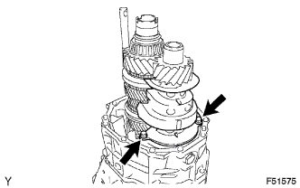
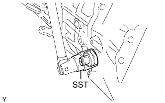
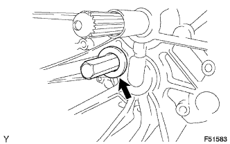
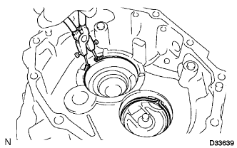
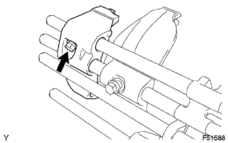
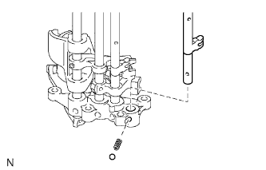
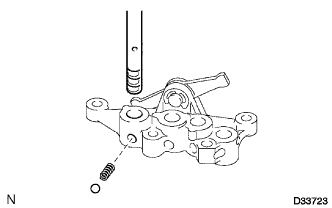

БЛОК МЕХАНИЧЕСКОЙ ТРАНСМИССИИ (для моделей с 1KD-FTV) > РАЗБОРКА |
| 1. СНИМИТЕ ПОДШИПНИК ВЫКЛЮЧЕНИЯ СЦЕПЛЕНИЯ В СБОРЕ |
Снимите фиксатор и подшипник выключения сцепления с вилки выключения сцепления.
| 2. СНИМИТЕ ВИЛКУ ВЫКЛЮЧЕНИЯ СЦЕПЛЕНИЯ В СБОРЕ |
Снимите вилку выключения сцепления и подшипник выключения сцепления с картера сцепления.
| 3. СНИМИТЕ ОПОРУ ВИЛКИ ВЫКЛЮЧЕНИЯ СЦЕПЛЕНИЯ |
Снимите опору вилки выключения сцепления с блока механической трансмиссии.
| 4. СНИМИТЕ ЧЕХОЛ ОПОРЫ ВИЛКИ ВЫКЛЮЧЕНИЯ СЦЕПЛЕНИЯ |
Снимите чехол опоры с переднего картера трансмиссии.
| 5. СНИМИТЕ ДЕРЖАТЕЛЬ НАПОЛЬНОГО РЫЧАГА ПЕРЕКЛЮЧЕНИЯ ПЕРЕДАЧ В СБОРЕ |
Выверните 4 болта.
С помощью молотка с пластмассовым покрытием снимите держатель напольного рычага переключения передач.
| 6. СНИМИТЕ КОЖУХ РЫЧАГА ПЕРЕКЛЮЧЕНИЯ ПЕРЕДАЧ |
 |
Выверните болт и снимите кожух рычага переключения передач.
| 7. СНИМИТЕ КРЫШКУ КАРТЕРА МЕХАНИЧЕСКОЙ ТРАНСМИССИИ |
Выверните 4 болта и снимите крышку картера трансмиссии.
| 8. СНИМИТЕ ЗАГЛУШКУ ШАРИКОВОГО ФИКСАТОРА ПЕРЕКЛЮЧЕНИЯ ПЕРЕДАЧ |
С помощью торцевой шестигранной головки на 10 мм снимите заглушку шарикового фиксатора переключения передач с переходника раздаточной коробки.
Извлеките шарик и пружину сжатия из переходника раздаточной коробки.
| 9. СНИМИТЕ ЗАДНЮЮ УСТАНОВОЧНУЮ ГАЙКУ ВЫХОДНОГО ВАЛА МЕХАНИЧЕСКОЙ ТРАНСМИССИИ |
С помощью ремня и деревянного бруска надежно закрепите трансмиссию на рабочем столе.
С помощью молотка и зубила раскерните заднюю гайку крепления.
 |
Введите в зацепление шестерню 5-й передачи, а затем закрепите первичный вал с помощью SST.
| *1 | Первичный вал |
Используя Г-образную рукоятку и SST, отверните заднюю гайку крепления с выходного вала.
Снимите ремень и деревянный брусок с трансмиссии.
Снимите подшипник выходного вала и распорную втулку.
| *1 | Подшипник выходного вала |
| *2 | Распорная втулка выходного вала |
| 10. СНИМИТЕ ПЕРЕХОДНИК РАЗДАТОЧНОЙ КОРОБКИ |
Выверните 10 болтов и снимите 2 кронштейна.
| *1 | Кронштейн |
Снимите переходник раздаточной коробки, аккуратно сбив его молотком с пластмассовым покрытием.
| 11. СНИМИТЕ ПРОБКУ НАЛИВНОГО ОТВЕРСТИЯ МЕХАНИЧЕСКОЙ ТРАНСМИССИИ |
Снимите 2 пробки наливных отверстий трансмиссии и 2 прокладки с переходника раздаточной коробки.
| 12. СНИМИТЕ МАСЛОПРИЕМНУЮ ТРУБКУ № 1 |
Снимите маслоприемную трубку № 1 с переходника раздаточной коробки.
| 13. СНИМИТЕ САЛЬНИК МАСЛООТДЕЛИТЕЛЯ |
Извлеките сальник маслоотделителя из переходника раздаточной коробки.
| 14. СНИМИТЕ ПРОБКУ КАРТЕРА ПЕРЕХОДНИКА РАЗДАТОЧНОЙ КОРОБКИ |
С помощью торцевой шестигранной головки 14 мм снимите пробку картера с переходника раздаточной коробки.
| 15. СНИМИТЕ ЗАДНИЙ ПОДШИПНИК ВЫХОДНОГО ВАЛА |
С помощью SST снимите 2 подшипника выходного вала (наружные кольца) с переходника раздаточной коробки.
| 16. СНИМИТЕ ЗАДНИЙ РАДИАЛЬНЫЙ ШАРИКОВЫЙ ПОДШИПНИК ЗАДАЮЩЕЙ ШЕСТЕРНИ |
 |
Выверните болт и снимите стопорную пластину подшипника.
С помощью SST снимите задний радиальный шариковый подшипник задающей шестерни с переходника раздаточной коробки.
| 17. СНИМИТЕ ИГОЛЬЧАТЫЙ РОЛИКОВЫЙ ПОДШИПНИК ПЕРЕХОДНИКА РАЗДАТОЧНОЙ КОРОБКИ |
Снимите роликовый подшипник с переходника раздаточной коробки.
| 18. СНИМИТЕ МАСЛООТДЕЛИТЕЛЬ ТРАНСМИССИИ |
|  |
Выверните 2 болта и снимите маслоотделитель.
| 19. ВЫВЕРНИТЕ БОЛТ ВАЛА ПРОМЕЖУТОЧНОЙ ШЕСТЕРНИ ЗАДНЕГО ХОДА |
 |
Выверните болт вала промежуточной шестерни заднего хода и снимите прокладку с вала промежуточной шестерни заднего хода.
| 20. СНИМИТЕ СРЕДНИЙ КАРТЕР ТРАНСМИССИИ |
Выверните 11 болтов.
Снимите средний картер трансмиссии, аккуратно сбив его молотком с пластмассовым покрытием.
| 21. СНИМИТЕ ПРОБКУ СЛИВНОГО ОТВЕРСТИЯ В СБОРЕ |
Снимите пробку сливного отверстия и прокладку со среднего картера трансмиссии.
| 22. СНИМИТЕ МАСЛОПРИЕМНУЮ ТРУБКУ № 2 |
Снимите маслоприемную трубку № 2 со среднего картера трансмиссии.
| 23. СНИМИТЕ ВАЛ РЫЧАГА ВЫБОРА И ПЕРЕКЛЮЧЕНИЯ ПЕРЕДАЧ |
Снимите вал рычага выбора и переключения передач с вала шестерни заднего хода.
| 24. СНИМИТЕ РЫЧАГ ВЫБОРА И ПЕРЕКЛЮЧЕНИЯ ПЕРЕДАЧ |
С помощью отвертки снимите разрезное уплотнение.
С помощью молотка и бородка с тонким цилиндрическим концом 5 мм выбейте стопорный штифт.
Выверните болт и снимите пластину блокировки, кулачок выбора и рычаг выбора с вала рычага.
Снимите штифт шарикового фиксатора и пружину с рычага выбора и переключения передач.
| 25. СНИМИТЕ ВЫКЛЮЧАТЕЛЬ СВЕТА ЗАДНЕГО ХОДА В СБОРЕ |
|  |
Используя SST, снимите выключатель света заднего хода и прокладку.
| 26. ПРОВЕРЬТЕ ОСЕВОЙ ЗАЗОР ПРОМЕЖУТОЧНОЙ ШЕСТЕРНИ ЗАДНЕГО ХОДА |
С помощью комплекта плоских щупов измерьте осевой зазор.
| 27. СНИМИТЕ ПРОМЕЖУТОЧНУЮ ШЕСТЕРНЮ ЗАДНЕГО ХОДА |
Снимите вал промежуточной шестерни заднего хода, подшипник промежуточной шестерни заднего хода и промежуточную шестерню заднего хода.
| 28. СНИМИТЕ ПЕРЕДНИЙ КАРТЕР ТРАНСМИССИИ |
Выверните 4 болта из скобы блокировки.
|  |
С помощью шестигранной головки 27 мм снимите пробку картера.
Свяжите первичный вал, задающую шестерню и узел привода с помощью куска веревки или шнура.
 |
Растяните 2 пружинных стопорных кольца и поднимите выходной вал, первичный вал, вал задающей шестерни и узел привода.
Снимите выходной вал, первичный вал, вал задающей шестерни и узел привода, осторожно ударяя молотком с пластмассовым покрытием по картеру сцепления.
Отделите выходной вал, первичный вал, вал задающей шестерни и узел привода друг от друга.
| 29. СНИМИТЕ МАСЛОПРИЕМНУЮ ТРУБКУ № 3 |
Снимите маслоприемную трубку № 3 с переднего картера трансмиссии.
| 30. СНИМИТЕ ПРУЖИННОЕ СТОПОРНОЕ КОЛЬЦО ВАЛА ПЕРЕДНЕГО ПОДШИПНИКА |
|  |
С помощью съемника стопорных колец снимите 2 пружинных стопорных кольца.
| 31. СНИМИТЕ САЛЬНИК КАРТЕРА ТРАНСМИССИИ |
С помощью SST извлеките передний сальник картера трансмиссии из картера трансмиссии.
| 32. СНИМИТЕ ИГОЛЬЧАТЫЙ ПОДШИПНИК КАРТЕРА ТРАНСМИССИИ |
С помощью SST снимите подшипник с переднего картера трансмиссии.
| *1 | Игольчатый подшипник картера трансмиссии | - | - |
| *a | Удерживайте | *b | Поверните |
| 33. СНИМИТЕ ВИЛКУ ПЕРЕКЛЮЧЕНИЯ ПЕРЕДАЧ № 3 |
|  |
Выверните болт и снимите вилку переключения передач № 3.
| 34. СНИМИТЕ СТЕРЖЕНЬ ВИЛКИ ПЕРЕКЛЮЧЕНИЯ ПЕРЕДАЧ № 3 |
|  |
Снимите стержень вилки переключения передач № 3, шариковый фиксатор переключения передач и пружину сжатия.
| 35. СНИМИТЕ ВИЛКУ ПЕРЕКЛЮЧЕНИЯ ПЕРЕДАЧ № 2 |
 |
Выверните болт и снимите вилку переключения передач № 2.
| 36. СНИМИТЕ СТЕРЖЕНЬ ВИЛКИ ПЕРЕКЛЮЧЕНИЯ ПЕРЕДАЧ № 2 |
 |
Снимите стержень вилки переключения передач № 2, шариковый фиксатор переключения передач и пружину сжатия.
| 37. СНИМИТЕ СТЕРЖЕНЬ ВИЛКИ ПЕРЕКЛЮЧЕНИЯ ПЕРЕДАЧ № 1 |
Используя бородок с тонким цилиндрическим концом диаметром 5 мм и молоток, выбейте разрезной штифт.
 |
Снимите стержень вилки переключения передач № 1, шариковый фиксатор переключения передач, пружину сжатия и шарнир переключения передач.
| 38. СНИМИТЕ ВИЛКУ ПЕРЕКЛЮЧЕНИЯ ПЕРЕДАЧ № 1 |
Используя бородок с тонким цилиндрическим концом диаметром 5 мм и молоток, выбейте разрезной штифт.
Снимите шарнир переключения передач № 2 и вилку переключения передач № 1.
| 39. СНИМИТЕ ВИЛКУ ПЕРЕКЛЮЧЕНИЯ ПЕРЕДАЧ № 4 |
Используя бородок с тонким цилиндрическим концом диаметром 5 мм и молоток, выбейте разрезной штифт.
Снимите вилку переключения передач № 4.
| 40. СНИМИТЕ СТЕРЖЕНЬ ВИЛКИ ПЕРЕКЛЮЧЕНИЯ ПЕРЕДАЧ № 4 |
|  |
Снимите стержень вилки переключения передач № 4, шариковый фиксатор переключения передач и пружину сжатия.
| 41. СНИМИТЕ РАСЦЕПНОЙ РЫЧАГ № 1 |
С помощью отвертки снимите разрезное уплотнение.
Снимите шарнир рычага переключения и расцепной рычаг.